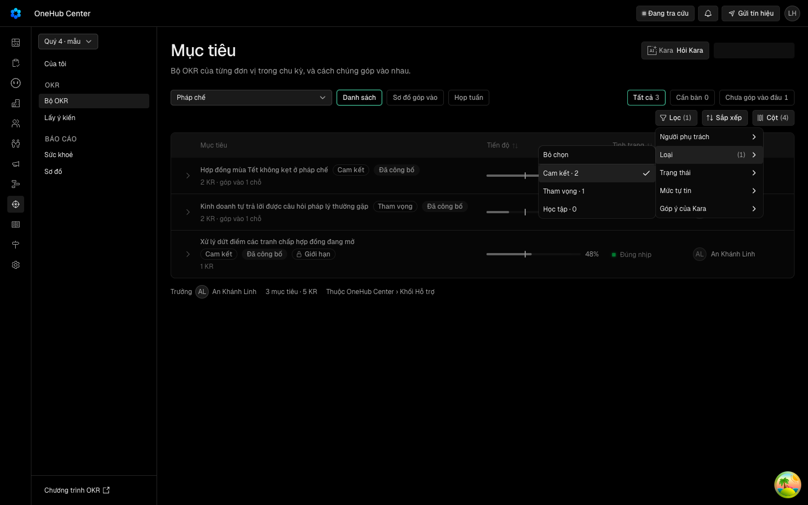
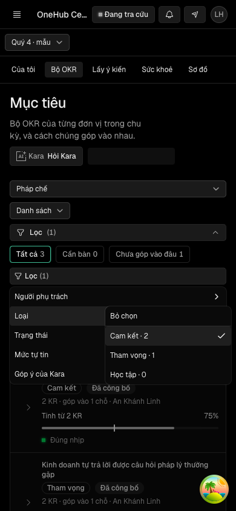
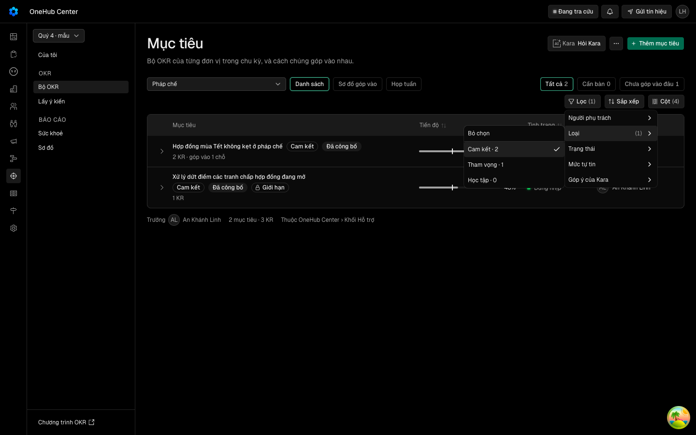

Chọn một mục trong Lọc ở trang Theo đơn vị thì menu Lọc vẫn mở, khung Lọc trên điện thoại không tự thu lại
Vì sao làm
Ở trang Theo đơn vị (kiểu xem danh sách), chọn một giá trị trong «Lọc» làm menu đóng lại và khung Lọc trên điện thoại thu lại. Nguyên nhân: đổi lọc đổi khoá truy vấn okr.danhSach, và trang thay cả bảng bằng khung chờ trong lúc truy vấn mới chạy, nên DataTable — nơi giữ trạng thái menu và khung Lọc — bị gỡ. Lượt này giữ bảng cũ (mờ, bận) khi chỉ lọc đổi, và vẫn đi khung chờ khi đổi đơn vị hay chu kỳ. Chỉ giao diện: thủ tục API, dữ liệu, quyền giữ nguyên.
Đã hứa
- AC-1 — Given trang Theo đơn vị ở 1440 px đã có bảng mục tiêu, When mở «Lọc», vào một mặt lọc, tích một giá trị và
- AC-2 — Given trang Theo đơn vị ở 390 px đã có bảng, khung Lọc đang mở, When tích một giá trị trong menu Lọc và danh
- AC-3 — Given trang Theo đơn vị đã có bảng, When đổi lọc và danh sách mới còn đang nạp, Then bảng không bị gỡ lần nào:
- AC-4 — Given trang Theo đơn vị đã có bảng, When chọn một lọc không khớp mục tiêu nào, Then sau khi danh sách về, khung
- AC-5 — Given trang Theo đơn vị đã có bảng, When đổi lọc và danh sách mới trả lỗi, Then hiện khung lỗi có nút «Thử lại»
- AC-6 — Given trang Theo đơn vị đã có bảng của một đơn vị, When chọn đơn vị khác hay chu kỳ khác và danh sách còn đang
- AC-7 — Given `DataTable` của `packages/ui`, When dựng với `refreshing` là `true`, `false` hay không truyền, Then với
Thiết kế
docs/superpowers/specs/2026-10-21-loc-don-vi-khong-tu-dong-design.md
Quyết định
- 2026-10-21 · Máy · approach · S1 — Chỉ giữ danh sách cũ khi truy vấn trước cùng chu kỳ và cùng đơn vị (placeholderData là hàm giuKhiChiDoiLoc); đổi đơn vị hay chu kỳ vẫn đi khung chờ.Hồ sơ đã ký khung-cho-don-vi-mot-hinh đòi thân bảng là khung khi đổi đơn vị; giữ bảng cho mọi đổi khoá sẽ phá AC-3 của nó.
- 2026-10-21 · Máy · approach · S1 — Tín hiệu chờ khi đổi lọc là vùng bảng mờ đi với aria-busy (VungDangTai), khối lọc và hàng công cụ không mờ.Cùng lời hứa đã ký ở Tài liệu: giữ danh sách cũ, mờ vùng danh sách, khối lọc không bị gỡ.
- 2026-10-21 · Máy · approach · S1 — Thêm cờ refreshing vào DataTable của packages/ui, chỉ bọc vùng bảng khi cờ được truyền; trang không truyền giữ DOM như hôm nay.Khối lọc nằm trong DataTable, bọc từ chỗ gọi sẽ mờ cả nút Lọc; luật kho đặt biến thể mới trong packages/ui.
- 2026-10-21 · Máy · descope · S1 — bỏ design-pass — vòng này không có hình mới: giữ bảng đã có và dùng tín hiệu chờ VungDangTai đã duyệt ở Tài liệu; ảnh E8 cho người nhìn ở Cổng Bằng chứng.design-pass dựng bản mẫu để duyệt một hình; ở đây không có hình nào để duyệt trước khi code.
- 2026-10-21 · Máy · descope · S1 — bỏ đường-đo — ô cơ hội chưa khai ngưỡng nghiệm thu nào để đo (mục «Ngưỡng chết / ngưỡng UAT» còn trống).opportunity.md của hàng DH13 để trống bốn ô ngưỡng.
- 2026-10-21 · Máy · descope · S1 — Không ghi lịch sử trình duyệt cho mỗi lần đổi lọc (history: push) như Tài liệu.Câu giao của DH13 chỉ nói menu và khung Lọc không tự đóng.
- 2026-10-21 · Máy · descope · S1 — bỏ đường-đo — vòng dựng không mang thước Cổng Giá trị; ô cơ hội chủ kho ký ở Cổng Đáng để trống ngưỡng, đo giá trị (nếu có) là việc sau khi gộp.Luật kho tách đo trên dữ liệu thật khỏi việc dựng; gap-probe P0 chỉ ra căn cứ mot-loi cũ không giết lối điền ngưỡng.
- 2026-10-21 · Máy · descope · S1 — bỏ design-pass — vòng không có hình mới: menu Lọc và khung Lọc giữ hình hôm nay, tín hiệu chờ duy nhất là vùng mờ VungDangTai chủ kho đã ký ở Tài liệu; ảnh E8 cho người nhìn ở Cổng Bằng chứng.gap-probe P0: lối chết cũ sai vì bàn đo giữ được truy vấn; căn cứ đúng là hình chờ đã được duyệt ở hồ sơ đã ký.
- 2026-10-21 · Máy · descope · S1 — Bỏ chọn một giá trị và «Bỏ lọc» trong một mặt không có AC riêng ở cả 1440 và 390 — Later.Hai thao tác đi cùng hàm onChange của mặt lọc và cùng chặn onSelect như thao tác chọn (FacetSubmenu trong data-table.tsx); AC-1, AC-2 đo đường chung đó.
- 2026-10-21 · Người · seal · gate1 —
- 2026-10-21 · Máy · fix · S4-r1 — Sửa năm chỗ thước có thể xanh mà không kiểm gì: AC-4 mở đường dẫn không khớp ở trang mới để bỏ lọc thật sự gửi truy vấn, và đòi có truy vấn bị giữ cùng một mẫu bận; AC-2 tính mẫu không thấy nút hay khung là hỏng; AC-3 chờ hết bận không ném lỗi, thêm dòng mới khớp số đếm và vùng hết mờ; AC-7 khẳng định ô tìm và phân trang có được vẽ, kèm lối phá khong-ve-tim.S4 vòng 1 REJECT vì năm phát hiện trong hợp đồng t3, t6, t7, t8, t10 — đều là thước thiếu đối chứng dương, mã sản phẩm không đổi.
Bằng chứng
Các eval
| Eval | Tiêu chí | Loại | Verdict | run_id | verified_at |
|---|---|---|---|---|---|
| E1 | AC-1 | script | PASS | minted-loc-don-vi-khong-tu-dong-E1-r2 | 2026-10-21T13:04:35Z |
| E2 | AC-2 | script | PASS | minted-loc-don-vi-khong-tu-dong-E2-r2 | 2026-10-21T13:04:35Z |
| E3 | AC-3 | script | PASS | minted-loc-don-vi-khong-tu-dong-E3-r2 | 2026-10-21T13:04:35Z |
| E4 | AC-4 | script | PASS | minted-loc-don-vi-khong-tu-dong-E4-r2 | 2026-10-21T13:04:35Z |
| E5 | AC-5 | script | PASS | minted-loc-don-vi-khong-tu-dong-E5-r2 | 2026-10-21T13:04:35Z |
| E6 | AC-6 | test | PASS | minted-loc-don-vi-khong-tu-dong-E6-r1 | 2026-10-21T12:34:07Z |
| E6m | AC-6 | script | PASS | minted-loc-don-vi-khong-tu-dong-E6m-r1 | 2026-10-21T12:34:07Z |
| E6s | AC-6 | script | PASS | minted-loc-don-vi-khong-tu-dong-E6s-r2 | 2026-10-21T13:04:35Z |
| E7 | AC-7 | test | PASS | minted-loc-don-vi-khong-tu-dong-E7-r2 | 2026-10-21T13:04:35Z |
| E8 | AC-1, AC-2, AC-3 | ui-check | PASS | minted-loc-don-vi-khong-tu-dong-E8-r2 | 2026-10-21T13:04:35Z |
Chi tiết từng eval
PASS E1 · script
AC-1: Given trang Theo đơn vị ở 1440 px đã có bảng mục tiêu, When mở «Lọc», vào một mặt lọc, tích một giá trị và
phien-do: xong — mã 0
PASS E2 · script
AC-2: Given trang Theo đơn vị ở 390 px đã có bảng, khung Lọc đang mở, When tích một giá trị trong menu Lọc và danh
phien-do: xong — mã 0
PASS E3 · script
AC-3: Given trang Theo đơn vị đã có bảng, When đổi lọc và danh sách mới còn đang nạp, Then bảng không bị gỡ lần nào:
phien-do: xong — mã 0
PASS E4 · script
AC-4: Given trang Theo đơn vị đã có bảng, When chọn một lọc không khớp mục tiêu nào, Then sau khi danh sách về, khung
phien-do: xong — mã 0
PASS E5 · script
AC-5: Given trang Theo đơn vị đã có bảng, When đổi lọc và danh sách mới trả lỗi, Then hiện khung lỗi có nút «Thử lại»
phien-do: xong — mã 0
PASS E6 · test
AC-6: Given trang Theo đơn vị đã có bảng của một đơn vị, When chọn đơn vị khác hay chu kỳ khác và danh sách còn đang
PASS E6m · script
AC-6: Given trang Theo đơn vị đã có bảng của một đơn vị, When chọn đơn vị khác hay chu kỳ khác và danh sách còn đang
PASS E6s · script
AC-6: Given trang Theo đơn vị đã có bảng của một đơn vị, When chọn đơn vị khác hay chu kỳ khác và danh sách còn đang
phien-do: xong — mã 0
PASS E7 · test
AC-7: Given `DataTable` của `packages/ui`, When dựng với `refreshing` là `true`, `false` hay không truyền, Then với
Ran 3 tests across 1 file. [687.00ms]
PASS E8 · ui-check
AC-1, AC-2, AC-3





- Pixel check (independent, PIL): 1440 wait frame, table text max luminance 142 vs 237 in done frame (table dimmed while waiting, clear after); toolbar region 237 in both (not dimmed). 390 wait frame: table text max 142 (dimmed), Loc frame/menu/chips 237 (not dimmed). Frames saved (evidence/): E8-cho-1440.png, E8-xong-1440.png, E8-cho-390.png (script output), plus slideshow copies E8-step2.png (=cho-1440), E8-step3.png (=xong-1440), E8-step4.png (=cho-390); E8-run.log (full run log), E8-network.txt (n-a). Step 1 has no screenshot. Network: driver is man-loc.mjs via tien-de.mjs, no browser-tool network/console reader -> n-a (driver). Note: in the 1440 wait frame the page-header actions (Them muc tieu button) show as a skeleton, they return in the done frame; this is outside the toolbar and not part of the Expected.
Vòng verify
- Round 1: REJECT — thước AC-2, AC-3, AC-4, AC-7 thiếu đối chứng dương (mẫu không thấy phần tử vẫn tính là đạt). Returned to implementation; thước và hồ sơ eval sửa ở f33105acb.
- Round 2: PASS — E1-E5, E6s, E7, E8 chạy lại trên thước đã sửa; E6, E6m mang sang từ round 1 vì delta không chạm paths của chúng.
Tài nguyên
| Khối | Tác tử | Token đầu ra |
|---|---|---|
| S4 round 1 | 25 | 50.213 |
| S4 round 2 | 17 | 30.481 |
2 lượt chấm · tổng 80.694 token
Giới hạn và ngoài hợp đồng
- Lọc nhanh (thẻ) — lọc tại chỗ trên dòng đã có, không gọi máy.
- Ghi lịch sử trình duyệt cho mỗi lần đổi lọc (`history: push`) như Tài liệu.
- Các trang `DataTable` khác (Liên hệ, Thoả thuận, Công ty, Chiến dịch, Cài đặt) — không truyền cờ, không đổi.
- Khung chờ của kiểu xem cây, họp tuần, chấm điểm.
Giao
chưa gộp vào onehub (nhánh production kho khai)
Giá trị
- Câu hỏi phép đo trả lời: … — chưa đo
- Kết quả nào là SỐNG: … — chưa đo
- Kết quả nào là CHẾT: … — chưa đo
- Timebox: … — chưa đo